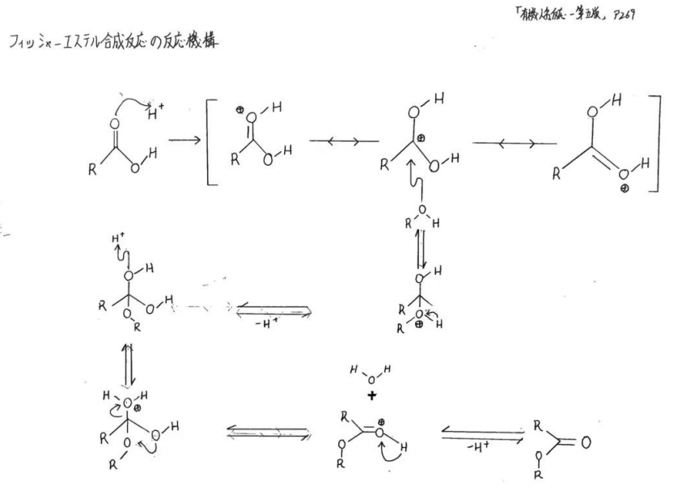

Tracing the reaction process using thin-layer
chromatography
The
original language of this article is Chinese and parts of it have been
translated using DeepL
This experiment uses thin
layer chromatography to trace the progress of a chemical reaction. Specifically,
you make something called an esterification reaction with acid and alcohol, and
then use a special kind of paper to see how the reactants and products change.
Esterification is an organic chemical reaction in which an acid and an alcohol
interact to produce a substance called an ester, which also gives off water.

Esters
are substances that have a fragrance, for example perfumes, flavours and
fragrances all contain esters. This reaction is slow, so you need to heat or add
a catalyst to speed up the reaction. I use sulphuric acid as a catalyst, which
facilitates the reaction between the acid and the alcohol, but does not
participate in the reaction so it does not affect the final result. I use acetic
acid and ethanol as reactants, they produce an ester called ethyl acetate, which
has a fruity smell and is very pleasant. (Don't smell it)
To do the
experiment, I first measured 10 ml of acetic acid and 10 ml of ethanol in a
measuring cylinder and then poured them into a round-bottomed flask. Next, I
used a dropper to put a few drops of sulphuric acid in and then stirred well
with a stirring rod. I then placed the flask on an electric hot plate and heated
it to boiling while connecting the flask to another collection flask with a
water condenser so that the esters and water produced by the reaction could be
separated out. I let the reaction run for about half an hour, then turned off
the power and let the flask cool down.
To
observe the results, I first filtered the liquid from the collection bottle
using a funnel and filter paper to remove some impurities. Then I used a syringe
to split the liquid into two parts, one for thin layer chromatography and the
other for scenting. Thin-layer chromatography is a method of analytical
chemistry that can be used to analyse the different components of a mixture.
Specifically, a special paper is used as the stationary phase and then a solvent
is used as the mobile phase. The solvent is allowed to move up the paper,
driving the different components of the mixture over different distances, thus
creating different spots. In this way it is possible to determine which
components are in the mixture and their relative content based on the position
and colour of the spots.
To do the
thin layer chromatography, I first cut the paper into a rectangle with a pair of
scissors and then used a needle to draw a line on the underside of the paper,
which was the starting line. I then used the needle to put a drop of reaction
solution on the starting line, along with a drop of acetic acid and a drop of
ethanol as a control. I then placed the paper in a beaker with solvent so that
the solvent was just above the starting line. I then covered the beaker with a
plastic bag to prevent the solvent from evaporating. I waited for about ten
minutes before I saw the solvent move up the paper, driving different spots. I
used a pen to draw a line where the solvent had moved to, which was the
termination line. I then took the paper out and let it dry.
The
results were such that I saw two colours of spots in the reaction solution, one
yellow and one purple. The yellow spot overlaps with the spot of acetic acid,
which means that there is still acetic acid in the reaction solution that has
not completely reacted. The purple spot does not overlap with the ethanol spot,
which means that ethyl acetate has been formed in the reaction solution. I used
a formula to calculate the relative amount of ethyl acetate in the reaction
solution and it was about 60%. This shows that my experiment is not perfect and
there is still a lot of room for improvement.
|